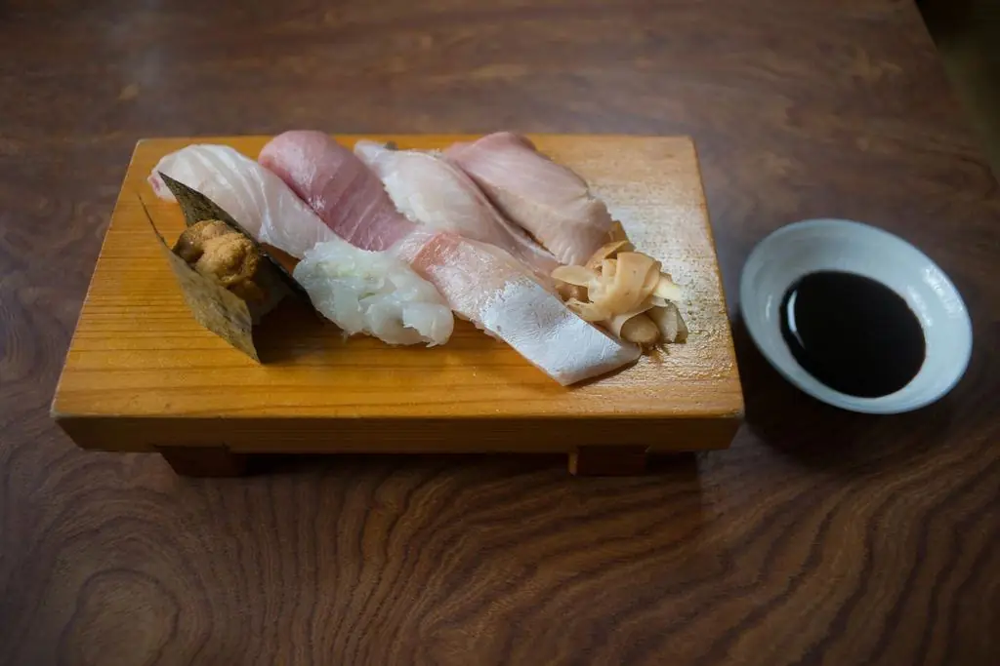

Om Saba & Ris
Saba & Ris öppnade 2016 i en före detta cykelverkstad på Svartbäcksgatan. Daniel Sato Berg hade då rullat sushi i åtta år i Stockholm och ville ha ett eget ställe där gästerna sitter vid disken och ser fisken skäras.
Vilka vi är
En liten sushibar i Svartbäcken med nigiri, lunch och take-away – varje bit skuren när du har beställt.
Saba & Ris öppnade 2016 i en före detta cykelverkstad på Svartbäcksgatan. Daniel Sato Berg hade då rullat sushi i åtta år i Stockholm och ville ha ett eget ställe där gästerna sitter vid disken och ser fisken skäras.
I dag är vi nio personer i köket och i matsalen. Riset kokas fyra gånger om dagen och smaksätts med vår egen risvinäger, och all fisk skärs först när beställningen kommer in – också den som ska hämtas.

I siffror
Om ossLiten bar, full fiskdisk
Vid disken och borden34platser
Tills din take-away är klar15min
Kokar vi ris varje dag4gånger
På Svartbäcksgatan10år


Boka bord
Boka bord eller plats vid disken
Skriv dag, tid och hur många ni är, och om ni vill sitta vid disken. Vi bekräftar med ett sms.
- Telefon
- 070-174 06 26
- E-post
- hej@sabaochris.se
- Öppettider
- Mån–fre 11–21, lör 12–22, sön 13–20
Kontakt
Hitta hit
- Hitta hit
- Svartbäcksgatan 31
753 32 Uppsala - Telefon
- 070-174 06 26
- E-post
- hej@sabaochris.se
- Öppettider
- Mån–fre 11–21, lör 12–22, sön 13–20